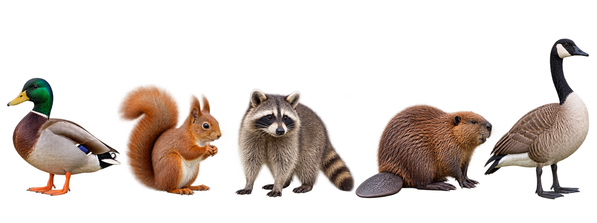
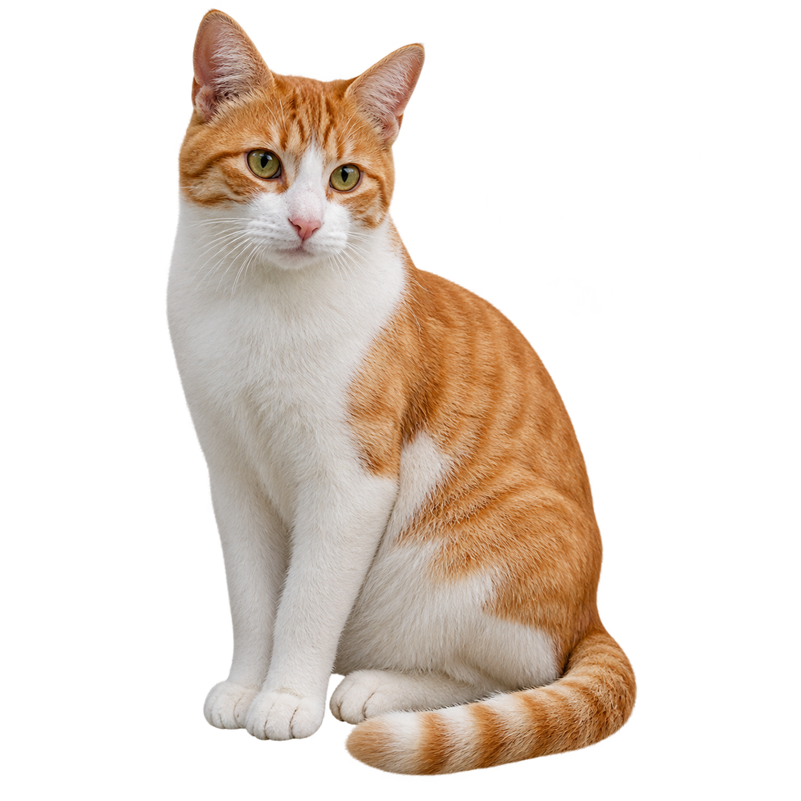
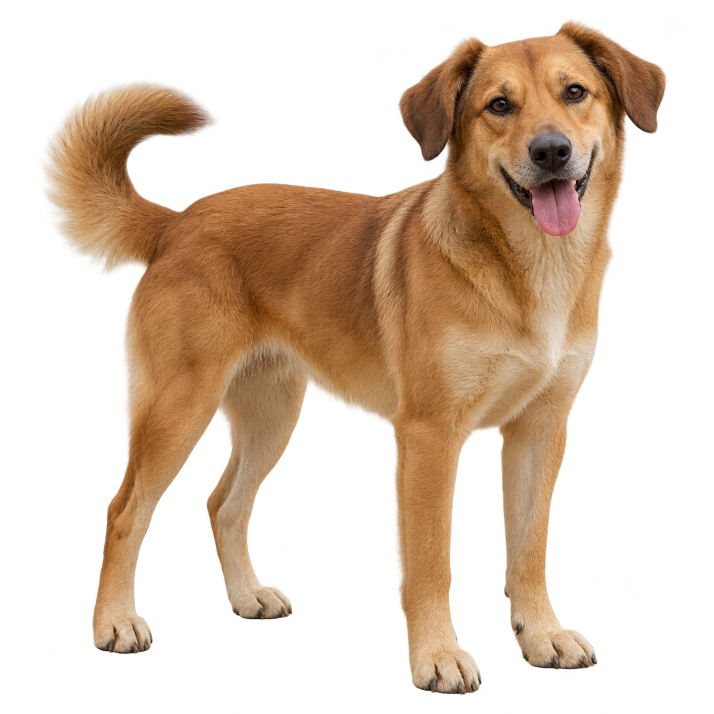
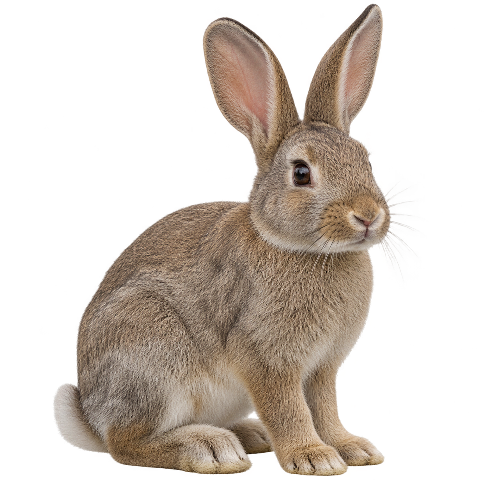
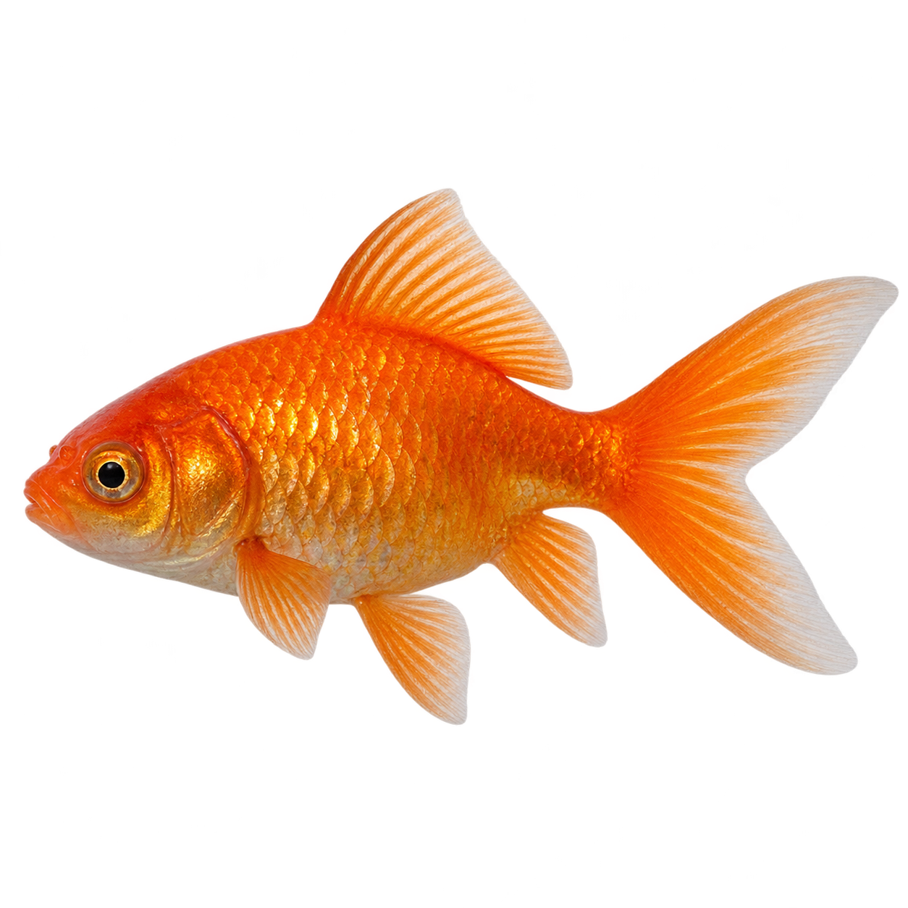
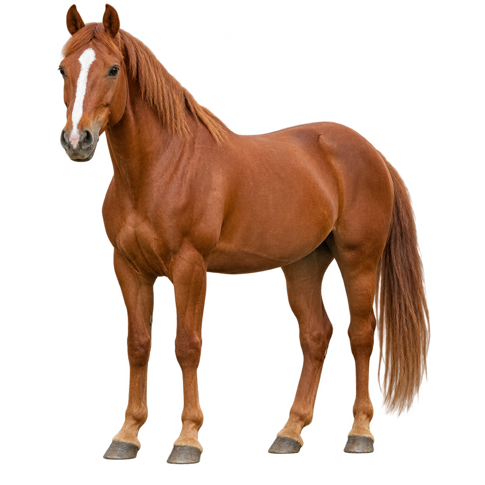
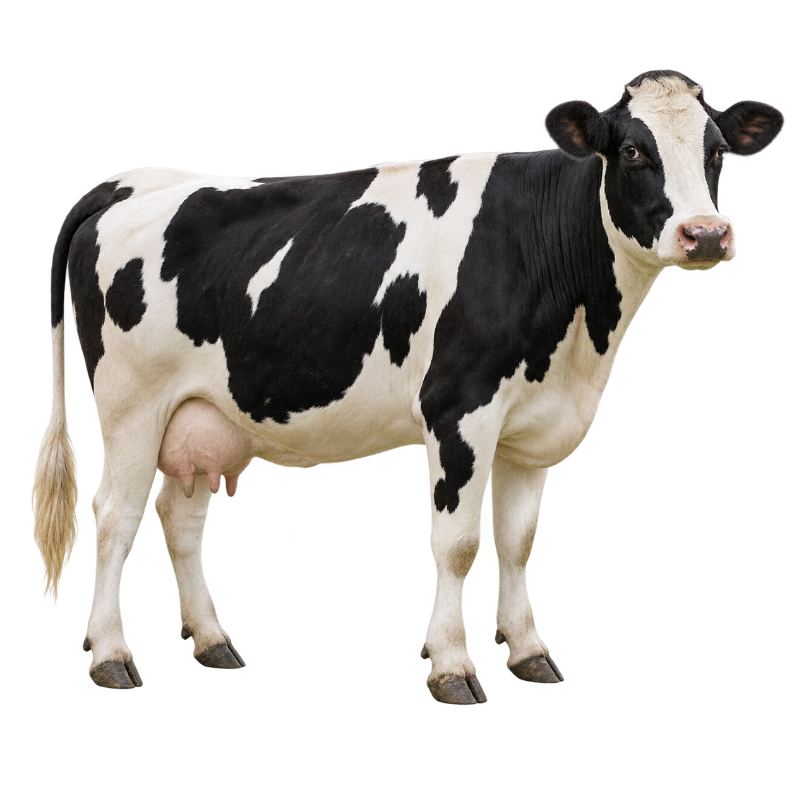
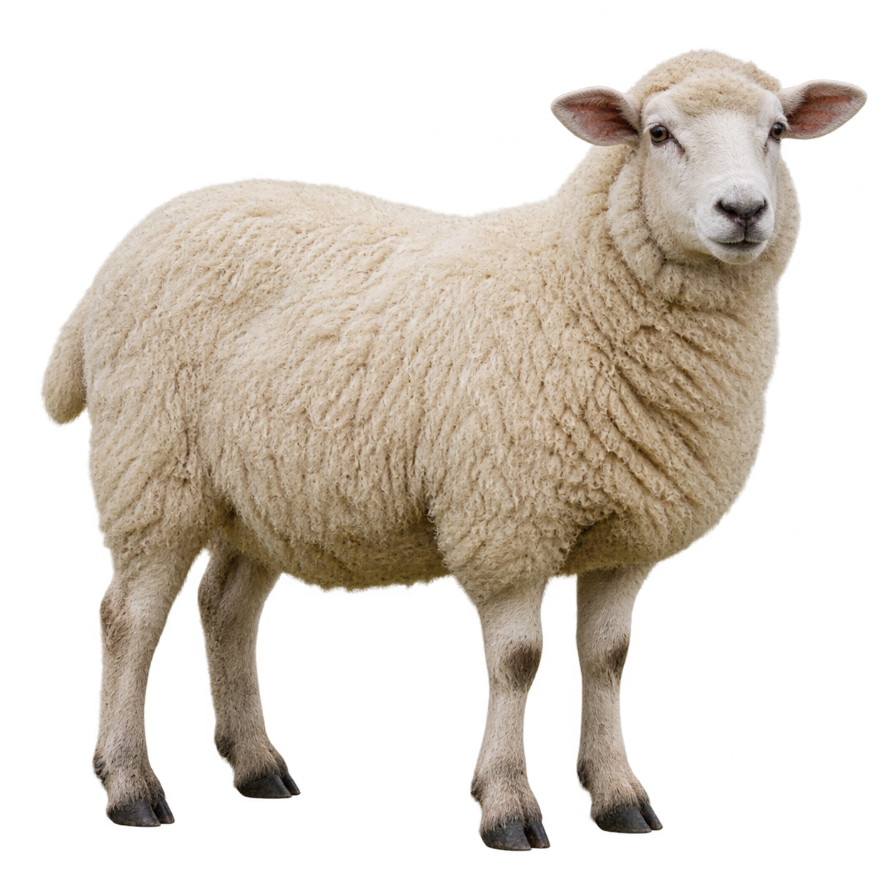

Vocabulary practice · 8A
Let’s go to Toronto!
Plan a day for another travelerTravel and animals
WORD BANK · Study first. Cover the word bank for memory games.
Travel verbs and chunks8A
| Travel chunk | Past model |
|---|---|
| travel by train | traveled by train |
| arrive in Toronto | arrived in Toronto |
| stay in a hotel | stayed in a hotel |
| visit a market | visited a market |
| take photos | took photos |
| leave at six | left at six |
leave a bag at a hotel → I left my bag at the hotel.
| More travel words | Meaning |
|---|---|
| book a room | ask a hotel for a room |
| pack a bag | put clothes in a bag |
| buy a ticket | pay for a bus or train ticket |
| catch a bus | take the bus you want |
| get on a bus | go into the bus |
| get off a bus | leave the bus |
Animals8A
♪ 8.13 Listen and repeat.
Wild animals

- duck
- squirrel
- raccoon
- beaver
- goose
Pets




Farm animals


